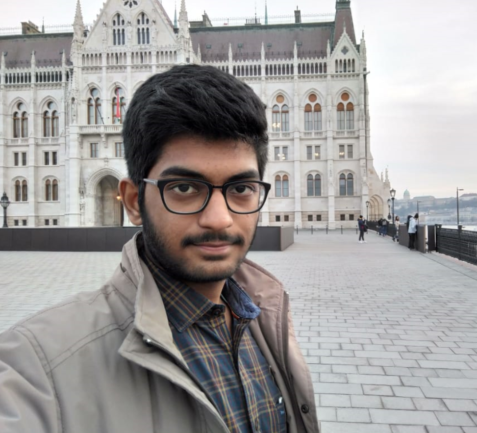
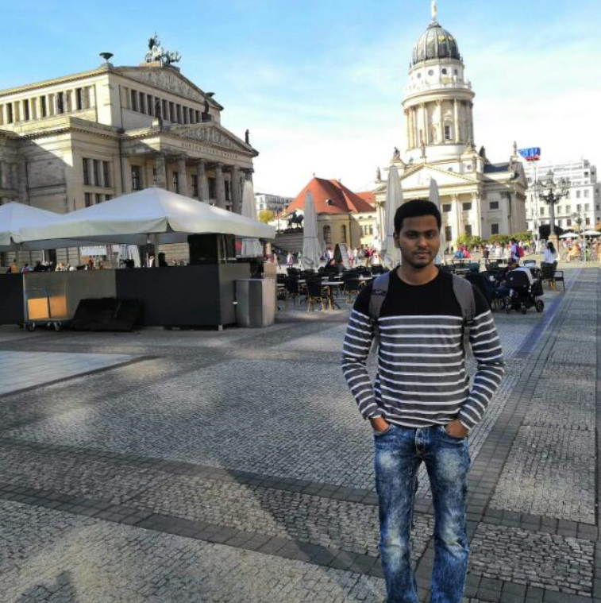
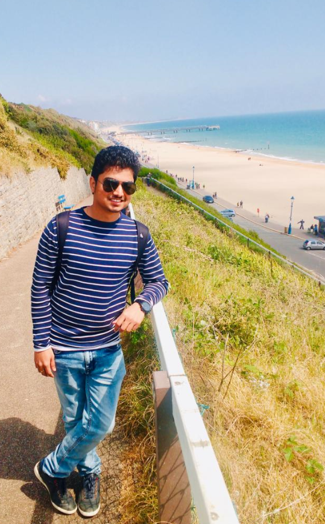

We are a group of 4 highly enthustiastic young lads with urge to create a better world for tommorow.

Abhivanth Murail : I am interested in learning the principles of software development and achieving team oriented goals from this course. Over the course of this project I can learn the most in demand skills in Information technology field. Developing an Android application is challenging as well as very interesting and it has always been my vision to be involved in such a project.

Harish Kumar Harihara Subramanian : Working of Android applications has always fascinated me and Developing one in real time is even more challenging and fun. I would like to learn in detail about the application development process and brush up my coding skills which in turn would be very useful in the long run and ultimately an added skillset in my CV.
>Logesh Babu Radhakrishnan : I worked as a software engineer for 6+ years for one of the pioneer companies in India. I worked in various projects as a quality assurance analyst, where I got opportunities to work on different tools - HP UFT using visual basic, ORACLE MY SQL for database testing, HP ALM for defect management. I have done my bachelors in Mechatronics Engineering. My hobbies are to travel around, play outdoor games, follow football, new electronic gadgets & trends. ISEE course enhanced my skills in development and implementation of android application in java language using scrum principles and agile methodologies. This course tailored me in a such a way that I can take up new roles and responsibilities as a developer.
Shudarsan Saravanan : As a smartphone enthusiast, I often envy the applications which make them smart and deliver a smooth experience for users in their day to day life.Involving in their development process along with my 2 year industry experience will further help me rediscover myself and streamline my areas of interests.So I am looking forward to working together as a team